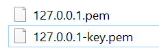
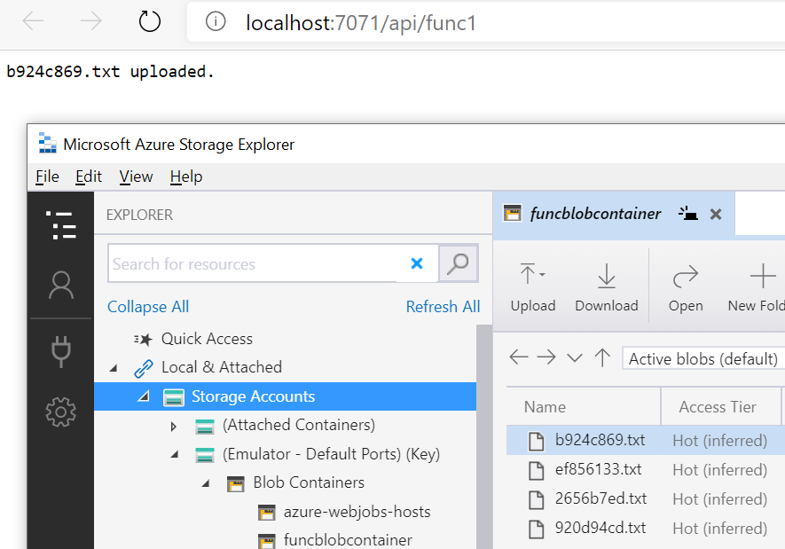

UPDATE 04/23/2020 - Azurite now officially supports HTTPS and OAuth. Please see my new blog here for all the details. You won’t need to create a reverse-proxy anymore like I describe in this post below. https://blog.jongallant.com/local-azure-storage-development-with-azurite-azuresdks-storage-explorer
If you are like me, then first, you love to save money and not hit the cloud when you don’t have to; use of local tooling and emulators is a great way achieve that. You can emulate Azure Storage with Azurite and you can peek into your storage account with Storage Explorer. Second, you love the new Azure Identity DefaultAzureCredential class and want to use it with your local emulation tools. Sadly, you cannot do so today. The current problem is that Azurite doesn’t support HTTP or Token based authentication, which the new Azure Identity DefaultAzureCredential requires, and Storage Explorer only supports HTTP. So even if you run Azurite with HTTPS, you still need token support for DefaultAzureCredential, and Storage Explorer can’t talk to the HTTPS endpoints.
Here are the problems in a nutshell:
-
HTTPS Issue: DefaultAzureCredential requires HTTPS. Azurite and Storage Explorer do not support HTTPS.
-
Token Issue: DefaultAzureCredential uses “Bearer Tokens”. Azurite does not support “Bearer Tokens”
But fear not, I have a solution for you. By the end of this post you’ll be all setup to use DefaultAzureCredential with Azurite and Storage Explorer.
I’m going to break this post into two parts, one for the HTTPS issue and one for the Token Credential issue.
I’ll show you:
- How to support HTTPS with Azurite
- How to use Azure Identity’s DefaultAzureCredential and TokenCredential with Azurite
I’m using on Azurite instead of Azure Storage Emulator in this post because Azurite is open source and I figured out what needs to be done to get this to work.
If you find any of this post useful, then it is important that you either comment below or send me an email here: https://jongio/contact so we know that it is important to you, which will help us prioritize.
Here’s a table that summarizes the issues with each of the tools:
| Tool | Desc | HTTPS | Token Support | Notes |
|---|---|---|---|---|
| Azure SDK: DefaultAzureCredential | Allows you to use the same credential objects for Dev and Production environments without code changes. | Required | Yes | The only way to use DefaultAzureCredential is with token based auth and it only supports HTTPS |
| Azurite | Azurite is an open source Azure Storage emulator that supports Windows and Linux. It starts a local server that behaves like Azure Storage, so you can dev against it like you would Azure. | Yes (v3.7) | Yes (v3.7) | |
| Storage Explorer | Allows you to locally view Azure Storage accounts and contents, including Azurite. | Yes | Not needed | You can point to HTTPS endpoints and import self-signed certs. See this post for more info. |
| Azure Storage Emulator | Similar to Azurite, but closed source and Windows only. | No | No | I didn’t spend a lot of time with Azure Storage Emulator becuase I knew I would need to make changes to it to get this all working. |
Issues
Let’s dig into each of the issues further and learn about a workaround that I created.
HTTPS Issue
As of Azurite 3.7 the following issues have been resolved.
We have a mismatch in HTTPS support amongst Azurite, Storage Explorer, and Azure SDKs. As it stands right now, you cannot use the Azure Identity’s DefaultAzureCredential with Azurite because Azurite doesn’t support HTTPS or TokenCredentials - which DefaultAzureCredential requires. If you run Azurite as an HTTPS server, then Azure Storage Explorer (to read blobs) won’t work becuase it is hard-coded to HTTP and doesn’t allow you to change it. I spent some time trying to get Azurite to natively support HTTPS, but ran into some issues and don’t have time to invesitgate it further. I got HTTPS working with Azurite via the https node package, but was blocked on Storage Explorer’s lack of HTTPS support. If you leave a comment below that you want Azurite to support HTTPS, then that will help us prioritize.
HTTPS Issue Resolution: HTTPS to HTTP Reverse Proxy
Like I mentioned before, you could update Azurite codebase to support HTTPS natively, but then Azure Storage Explorer won’t work. You could setup an HTTP (Azure Storage Explorer) to HTTPS (Azurite) reverse proxy, but again I couldn’t get that fullly functioning in the time allotted for this problem, so I decided to show you how to setup a simple HTTPS to HTTP proxy. With that, DefaultAzureCredential gets an HTTPS endpoint via the redirection and Azure Storage Explorer get the HTTP endpoint via direct access to Azurite HTTP endpoints.
Local SSL Cert
You need a cert because in the next step we’ll create an HTTPS to HTTP Reverse Proxy. Anytime you publish a server that accepts HTTPS you need a cert, even if it is self-signed. Otherwise, you’ll get an insecure error when you access the site.
There are good reasons to not setup an SSL cert for localhost, read this article by Let’s Crypt: Certificates for localhost if interested in learning more about that.
You can use OpenSSL, but I’m on a Windows machine and there are workarounds to get that to work. I found the two following scripted options that I liked better.
- dotnet dev-certs - I haven’t tried this option, but it should work. Let me know in the comments if you got this working.
- mkcert - This is the option I went with because I found it before the
dotnet dev-certsoption.
Read up on mkcert and dotnet dev-certs and determine which one is best for you.
Here are the mkcert commands I ran:
choco install mkcert
mkcert -install
mkcert 127.0.0.1That outputs a 127.0.0.1.pem cert file and a 127.0.0.1-key.pem file locally. Save those in a secure location, don’t share with anyone.

HTTPS to HTTP Reverse Proxy
As mentioned above, DefaultAzureCredential and any TokenCredential only support HTTPS (not HTTP), so we need a Reverse Proxy to direct all DefaultAzureCredential HTTPS calls to the Azurite HTTP endpoints.
We are going to use the Node.js http-party/node-http-proxy module to do so. You could also use nginx or any other server. This Node.js was the quickest way for me to get this to work.
- Install Node.js
- Install http-proxy
npm install http-proxy --save- Create a
proxy.jsfile with the following code:
var httpProxy = require('http-proxy'),
fs = require('fs');
httpProxy.createProxyServer({
target: 'http://127.0.0.1:10000',
ssl: {
key: fs.readFileSync('127.0.0.1-key.pem', 'utf8'),
cert: fs.readFileSync('127.0.0.1.pem', 'utf8')
}
}).listen(10010);
console.log("Reverse Proxy from https://127.0.0.1:10010 (DefaultAzureCredential HTTPS) to http://127.0.0.1:10000 (Azurite HTTP) now running.")Not that this sample only supports blob, you can create a new file called proxy-queue.js with the queue endpoints and run that as well. Leave a comment if you need help with that.
I’m copying the code here just to get this out there to you quicker. Let me know if you want me to create an npm package or a docker container that wraps all this up for you.
- Start the Reverse Proxy with the following code:
node proxy.jsYou will see the following message outputed to your terminal.
Reverse Proxy from https://127.0.0.1:10010 to http://127.0.0.1:10000 now running.DefaultAzureCredential Code Configuration
The following example is in the context of an Azure Function, but the concepts apply to any type of application.
- Configure Port
We need to instantiate the Azure SDK Client objects with the port number that is the HTTPS enabled one from our reverse proxy, which in this example is 10010 (HTTPS), not 10000 (HTTP)
Your local.settings.json file should look like this with the 10010 port.
{
"IsEncrypted": false,
"Values": {
"AzureWebJobsStorage": "UseDevelopmentStorage=true",
"FUNCTIONS_WORKER_RUNTIME": "dotnet",
"AZURE_CLIENT_ID": "SERVICE_PRINCIPAL_APP_ID",
"AZURE_CLIENT_SECRET": "SERVICE_PRINCIPAL_PASSWORD",
"AZURE_TENANT_ID": "SERVICE_PRINCIPAL_TENANT_ID",
"AZURE_STORAGE_HOST": "127.0.0.1:10010",
"AZURE_STORAGE_ACCOUNT": "devstoreaccount1",
"AZURE_STORAGE_CONTAINER": "azfuncblobs"
}
}You’ll notice that we are using a service principal here. We do need to let DefaultAzureCredntial get a token from somewhere, so a service principal will be required. See the following post for instructions on setting up a service principal: How to Upload Blobs to Azure Storage from an Azure Function with Azure Managed Identities - (Part 2): Local Function with Azure Storage and Service Principal (local function, cloud storage). You will see in that post how to give that Service Principal the appropriate permissions to access Azure Storage.
- Update Code
Then your function code will detect if an emulator is being used and use the HTTPS endpoint and port that it pulls from AZURE_STORAGE_HOST.
See my post How to Upload Blobs to Azure Storage from an Azure Function with Azure Managed Identities - (Part 1): Local Function with Storage Emulator (local function, local storage) for instructions on setting up the complete Azure Function dev environment.
var connection = Environment.GetEnvironmentVariable("AzureWebJobsStorage");
var host = Environment.GetEnvironmentVariable("AZURE_STORAGE_HOST");
var account = Environment.GetEnvironmentVariable("AZURE_STORAGE_ACCOUNT");
var container = Environment.GetEnvironmentVariable("AZURE_STORAGE_CONTAINER");
var emulator = connection.Contains("UseDevelopmentStorage=true") && account == "devstoreaccount1";
var path = emulator ? $"https://{host}/{account}/{container}" : $"https://{account}.{host}/{container}";
var client = new BlobContainerClient(new Uri(path), new DefaultAzureCredential());If you run that code as is right now you’ll get an exception. Keep reading for a solution for that.
Tokens Issue
We also have a mismatch in credential type support. Azurite supports Shared Key and Shared Access Signature (SAS) tokens, but DefaultAzureCredential only supports Bearer Tokens. So when you try to make the above code as-is, you will get and error:
[2/5/2020 7:42:04 AM] System.Private.CoreLib: Exception while executing function: func1. Azure.Storage.Blobs: Server failed to authenticate the request. Make sure the value of
the Authorization header is formed correctly including the signature.
RequestId:9cf40e52-1818-4207-a02f-bd2b3f5b6f85
Time:2020-02-05T07:42:03.652Z
[2/5/2020 7:42:04 AM] Status: 403 (Server failed to authenticate the request. Make sure the value of the Authorization header is formed correctly including the signature.)
[2/5/2020 7:42:04 AM]
[2/5/2020 7:42:04 AM] ErrorCode: AuthorizationFailureTokens Issue Resolution
Keep in mind that the below is just a prototype to unblock the customers that are blocked and they understand that using this approach is not final, not supported, and only to be used as an example. It is not secure as it only checks for the existance of a Bearer token and does not validate it any way. Please follow along at this issue for updates on the conversation with the Azurite team: Support Bearer Token Credentials #389
Azurite doesn’t support Token based auth, so I have implemented a BlobTokenAuthenticator in this commit here: Add support for Bearer tokens.
I only implemented BlobTokenAuthenticator. I’ll implement Queue support if you need it and leave a comment below or on my fork.
Let’s learn how to use it as-is while I work out getting this official supported with the Azurite team.
Clone my Azurite Fork
You’ll first want to get my Azurite fork locally:
git clone https://github.com/jongio/AzuriteInstall and Run Azurite
You’ll then want to install and run from that fork:
Make sure you stop any running Azurite or Storage Emulator instances are you will get a PORT in use error.
- npm install and run
npm ci
npm run build
npm install -g
azurite --loose- Debug in VS Code
Open the project in VS code, select the “Loose” debug profile and hit F5.
Notes:
- You need to use the
--loosecommand because DefaultAzureCredential uses headers that aren’t yet supported by Azurite.
Test it
Now that you have the HTTPS->HTTP reverse proxy setup, and my fork of Azurite with BlobTokenAuthentication, it is time to test out your code.
Re-run your code, the same code that I posted above with BlobContainerClient and it will work.
In the case of Azure Functions, you should see a successful output from the app, like this:
[2/5/2020 9:21:27 AM] Executed HTTP request: {
[2/5/2020 9:21:27 AM] "requestId": "4b570fbd-d058-4d2b-8c1d-093f8bb05d34",
[2/5/2020 9:21:27 AM] "method": "GET",
[2/5/2020 9:21:27 AM] "uri": "/api/func1",
[2/5/2020 9:21:27 AM] "identities": [
[2/5/2020 9:21:27 AM] {
[2/5/2020 9:21:27 AM] "type": "WebJobsAuthLevel",
[2/5/2020 9:21:27 AM] "level": "Admin"
[2/5/2020 9:21:27 AM] }
[2/5/2020 9:21:27 AM] ],
[2/5/2020 9:21:27 AM] "status": 200,
[2/5/2020 9:21:27 AM] "duration": 1924
[2/5/2020 9:21:27 AM] }And then when you load up Storage Explorer, you’ll now see the blobs that you uploaded or whatever you did in your code.

Conclusion
We covered two main things:
- HTTPS with Azurite - solved with http-proxy
- Token Credential support with Azurite - stopgapped short term solved with my impl of BlobTokenAuthenticator.
I really hope you find this useful. I want to remind you that you should leave a comment on this blog or any of the GitHub issues mentioend above if this was useful, so we know if we should prioritize this.
Jon